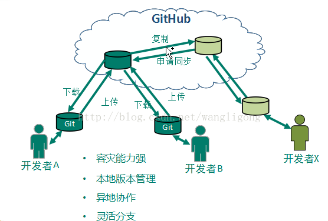

简介：
Git是一个分布式版本控制系统。
集中式vs分布式（面试前看）
说到分布式，就必须知道集中式(SVN)，两者都是版本控制系统，那么二者有什么区别呢？
集中式版本控制系统，版本库是集中存放在中央服务器的，而干活的时候，用的都是自己的电脑，所以要先从中央服务器取得最新的版本，然后开始干活，干完活了，再把自己的活推送给中央服务器。中央服务器就好比是一个图书馆，你要改一本书，必须先从图书馆借出来，然后回到家自己改，改完了，再放回图书馆。
集中式版本控制系统最大的毛病就是必须联网才能工作，如果在局域网内还好，带宽够大，速度够快，可如果在互联网上，遇到网速慢的话，可能提交一个10M的文件就需要很长时间。
分布式版本控制系统根本没有“中央服务器”，每个人的电脑上都是一个完整的版本库，这样，你工作的时候，就不需要联网了，因为版本库就在你自己的电脑上。既然每个人电脑上都有一个完整的版本库，那多个人如何协作呢？比方说你在自己电脑上改了文件A，你的同事也在他的电脑上改了文件A，这时，你们俩之间只需把各自的修改推送给对方，就可以互相看到对方的修改了。
分布式版本控制系统通常也有一台充当“中央服务器”的电脑，但这个服务器的作用仅仅是用来方便“交换”大家的修改，没有它大家也一样干活，只是交换修改不方便而已。
功能：
代码备份，协同开发，版本还原，历史追查，版本记录，冲突解决，权限管理（SVN版本控制器具有的功能）分支管理，代码审查（Git特色）
Git将分支管理做的更为优秀，同时又具有一个代码审查的功能，对于非信任伙伴，在整合其代码的时候可以先进行审查。
Git图示：

Git安装:
傻瓜式安装，next操作